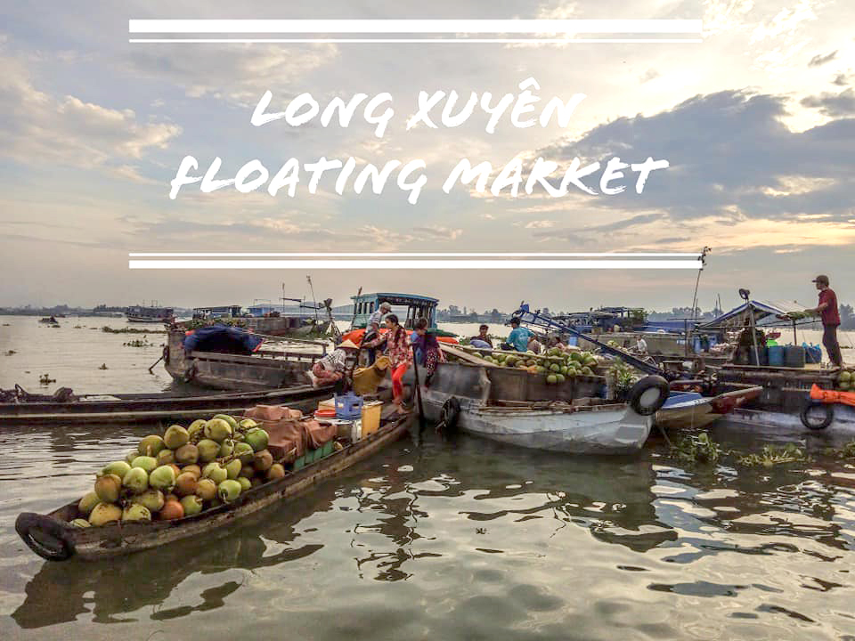
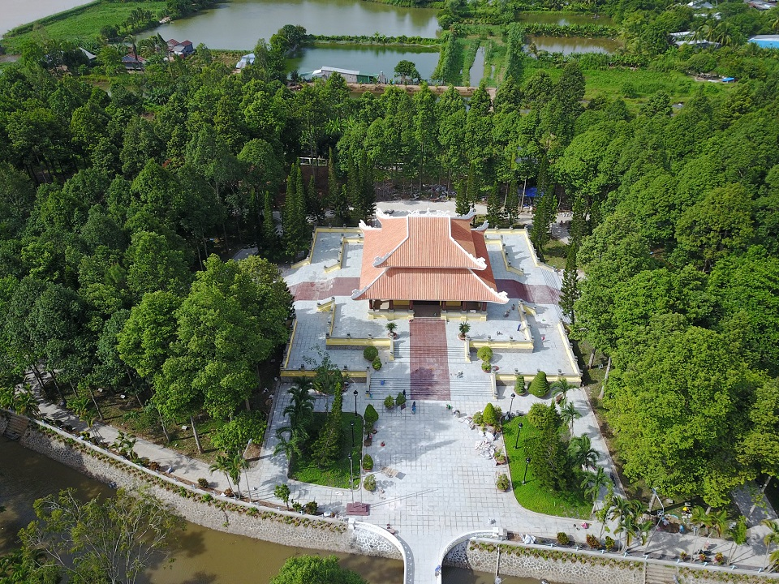
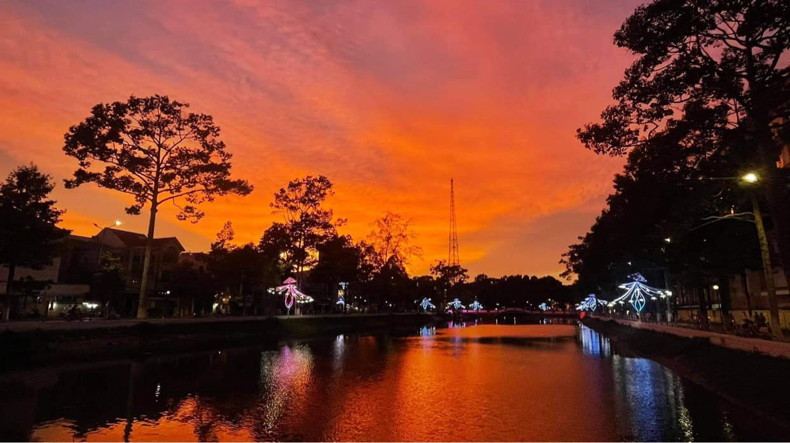
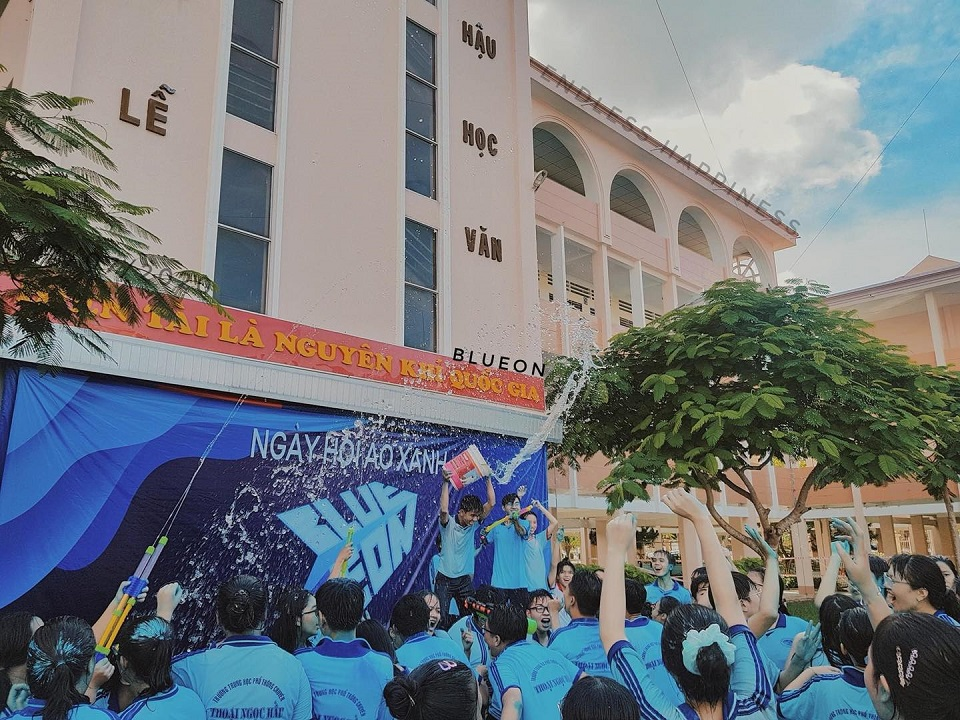
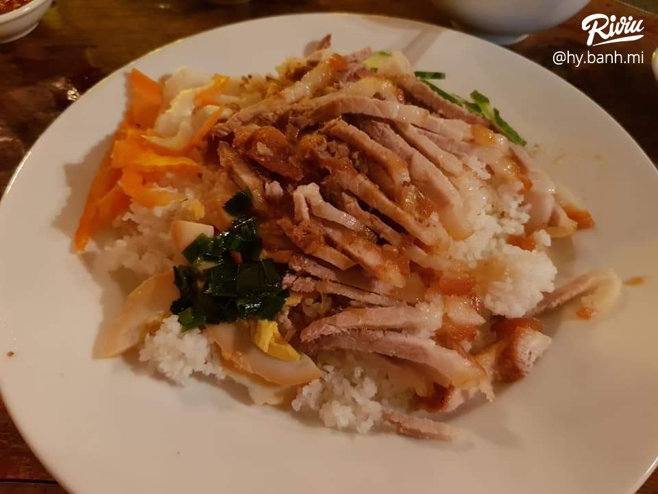
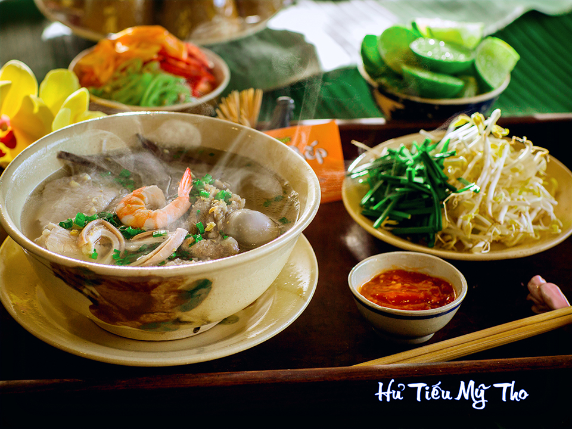
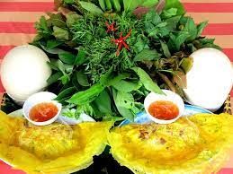

Giới Thiệu
Cách TP. HCM chỉ khoảng 190km, thành phố Long Xuyên thuộc tỉnh An Giang được đánh giá là một trong những nơi đáng để tham quan du lịch nhất hiện nay. Nơi đây được ví như “một bức tranh thu nhỏ” của miền Tây Nam Bộ, với cảnh sắc thiên nhiên yên bình thơ mộng cùng những con sông rạch đậm chất sông nước rất thích hợp để đưa nhau đi “đổi gió”. Dưới đây là những địa điểm vui chơi ở An Giang không nên bỏ qua, cùng tìm hiểu cụ thể ngay trong bài viết dưới đây nhé!
Địa điểm
Long Xuyên – nay là thành phố trực thuộc tỉnh An Giang, thuộc vùng đồng bằng sông Cửu Long. Long Xuyên không chỉ nổi tiếng với khu chợ nổi, di tích quốc gia mà đặc sản Long Xuyên cũng được rất nhiều du khách yêu thích bởi sự dân dã, giản dị và hương vị mới lạ, khác biệt những vùng đất khác.
-
1.Chợ nổi Long Xuyên
Là một trong những chợ nổi hiếm hoi ở miền nam còn giữ được những nét sinh hoạt rất nguyên sơ của miền tây sông nước, Chợ nổi Long Xuyên là một địa điểm tham quan lý tưởng dành cho bạn khi du lịch Long Xuyên.
 -
2.Khu tưởng niệm Chủ tịch Tôn Đức Thắng
Được xem là những điểm du lịch ở An Giang thu hút được rất nhiều khách du lịch. Khi tới đây, bạn sẽ được khám phá ngôi nhà lưu niệm lưu giữ rất nhiều hiện vật và tài liệu về sự nghiệp của chủ tịch Tôn Đức Thắng.Tại khu tưởng niệm bạn cũng sẽ có cơ hội “thắp nén nhang” tưởng nhớ người chiến sĩ cách mạng xưa.Đến khu tưởng niệm chủ tịch Tôn Đức Thắng, những gì nhìn thấy sẽ mang đến cho bạn những cảm xúc mãnh liệt với những nỗi biết ơn sâu sắc, nỗi nhớ thương da diết và qua từng kiến trúc được xây dựng tỉ mỉ cũng sẽ cảm nhận được lòng kính trọng vô bờ của người dân nơi đây đối với bác Tôn đáng kính.
 -
3.Hồ Nguyễn Du
Tọa lạc tại phường Mỹ Bình, thành phố Long Xuyên, An Giang. Đây được xem là một khu hồ, công viên đẹp nhất ở miền Tây với khung cảnh nên thơ, lãng mạn; với làn nước trong, yên ả và những rặng cây soi bóng xuống mặt hồ.Tuy nằm cạnh 2 con đường, nhưng hồ không mất đi vẻ nên thơ. Bởi mặt nước hồ lúc nào cũng yên ả, tĩnh lặng; những rặng liễu lòa xòa, e ấp soi mình trên mặt hồ. Gần hồ có các quán cà phê, hàng quán phục vụ điểm tâm, giải khát. Với không gian thơ mộng và sự tiện lợi đó, hồ Nguyễn Du là một điểm hẹn được nhiều bạn trẻ yêu thích.
 -
4.Trường THPT Chuyên Thoại Ngọc Hầu
Trang giấy thanh xuân của mỗi người chúng ta lại có thêm một kỷ niệm đẹp, đó là những giây phút quẩy tưng bừng bên bạn bè, quay quần bên lửa trại, giao lưu cùng các anh chị cựu học sinh hay cháy hết mình cùng đêm văn nghệ… Và một lần nữa, tụi mình đã thấy một Thoại Ngọc Hầu cháy bừng, rực rỡ. Mình thấy sức sống của từng con người, ngọn lửa tuổi trẻ của tụi mình vẫn rực đỏ, đốt cháy cái giá lạnh buổi đêm. Ngọn lửa ngày đó đánh dấu thanh xuân của tụi mình, và ngọn lửa ngày hôm nay một lần nữa khẳng định vị thế của một THOẠI NGỌC HẦU chưa bao giờ ngừng “cháy”. Thoại Ngọc Hầu trong tụi mình lúc bấy giờ là hành trình lớn, một hành trình kết nối triệu triệu trái tim, hành trình lửa đỏ… Trong cái nhiệt huyết ấy có một chút sự bỡ ngỡ của áo cam, cái nồng nhiệt của áo xanh, một chút luyến tiếc của áo đỏ và sự bồi hồi của các anh chị cựu học sinh. Niềm vui khi ấy, cảm xúc ấy vẫn vẹn nguyên đến lúc này.

Món ngon
Long Xuyên – nay là thành phố trực thuộc tỉnh An Giang, thuộc vùng đồng bằng sông Cửu Long. Long Xuyên không chỉ nổi tiếng với khu chợ nổi, di tích quốc gia mà đặc sản Long Xuyên cũng được rất nhiều du khách yêu thích bởi sự dân dã, giản dị và hương vị mới lạ, khác biệt những vùng đất khác.
-
1.Cơm tấm Long Xuyên
Chắc hẳn bạn đã từng nghe qua cơm tấm Sài Gòn rồi phải không? Nhưng cơm tấm Long Xuyên lại có hương vị rất khác đấy.
Cơm tấm đặc sản Long Xuyên – Món ăn ngon dành cho những người sành ăn.
Đến Long Xuyên mà không thưởng thức món cơm tấm ở đây thì quả là một thiếu sót đấy. Cơm tấm Long Xuyên có hương vị rất riêng, được làm từ thịt sườn, trứng kho, bì và cơm tấm.Địa chỉ ăn cơm tấm Long Xuyên ngon.
-Cơm tấm Loan 21 Phan Đình Phùng, Mỹ Long, Thành phố Long Xuyên.
-Quán Cây Điệp 67 Lý Tự Trọng, Mỹ Long, Thành phố Long Xuyên. (quán nổi tiếng từ lâu nhưng có giá thành mắc hơn các quán khác)
-
2. Hủ tiếu Mỹ Tho
Hủ tiếu Mỹ Tho dĩ nhiên không giống với hủ tiếu Sài Gòn hay hủ tiếu người Hoa ăn kèm rau nộm, cải xà lách mà bạn biết không hủ tíu Mỹ Tho chỉ ăn kèm với giá và rau thơm, thêm chút vị chua của chanh vị cay của ớt cùng vị thơm, đậm đà đặc trưng của nươc sốt độc đáo. Tuy có chút khác biệt nhưng bảo đảm kho thực khách nếm qua thì chỉ có thể hít hà khen ngon.
Những ai đã Long Xuyên đều truyền tai nhau một buổi sáng sớm hay chiều tối không thử thưởng thức qua tô hủ tiếu đậm vị này chắc chắn sẽ lỡ một “nền” ẩm thực thơm ngon tuyệt đỉnh.Gợi ý địa chỉ ăn hủ tiếu Mỹ Tho ngon dành cho bạn:
-Art Coffee Long Xuyên tại Phan Đình Phùng, Mỹ Long, Thành phố Long Xuyên.
-
3. Bánh xèo rau rừng
Bánh xèo rau rừng tưởng là món ăn quen thuộc nhưng lại cực kỳ khác lạ
Đã đến Long Xuyên, du khách nhất định phải nếm thử món bánh xèo rau rừng đặc sản Long Xuyên nổi tiếng nha. Tuy bánh xèo nơi đâu cũng có nhưng bánh xèo rau rừng Long Xuyên lại mang một hương vị riêng biệt không nơi nào có được. Điểm đặc biệt ấy chính là đĩa rau rừng ăn kèm phong phú với hơn 20 loại được hái trên núi Cấm, gồm có: rau tía tô, xà lách, lá của cây xoài, các loại dưa giá, húng quế, diếp cá,…Địa điểm ăn bánh xèo rau rừng Long Xuyên ngon:
-Bánh xèo 30/4 – Lê Quý Đôn:4/4 Lê Quý Đôn, phường Mỹ Bình, Tp. Long Xuyên, An Giang.
-Bánh xèo ăn là ghiền: Quốc lộ 91, phường Bình Khánh, Tp. Long Xuyên, An Giang.
Hỗ trợ
Tìm hiểu thêm
Tải ứng dụng của chúng tôi
/qr.png)
/ggplay.png)
/appstore.png)